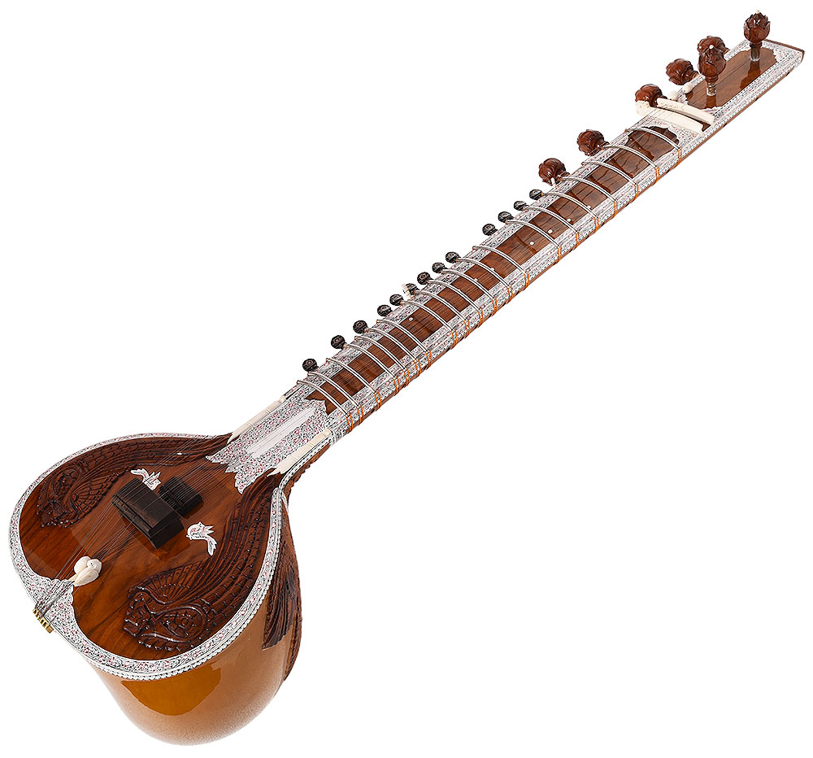

The sitar is an Indian Classical plucked stringed instrument. It is notably long in physical nature, with a round bottom. Most sitars come with either 6 or 7 main strings, and many more(normally 13) symphatetic strings. This brings the total amount of strings to roughly 20. Each sitarist can determine how many main and symphatetic strings they have.
The sitar, as implied, originates from the Indian subcontinent. It emerged during the medieval periods in India before bursting in popularitty in the 18th and 19th centuries. Scholars believe that this instrument descended from a Persian stringed instrument of similar name, and then popularized by the Mughals in India. There is dispute on the lineage of the sitar- whether or not Mughals created it or native Indians created it prior to the Mughals, deriving it from local instruments. The sitar is commonly used in performances, used for religious occassions, and for private enjoyment. It remained popular in India, especially in Bollywood movies, but is experiencing more popularity in the US due to Pandit Ravi Shankar.
A History of Sitar by Britannica